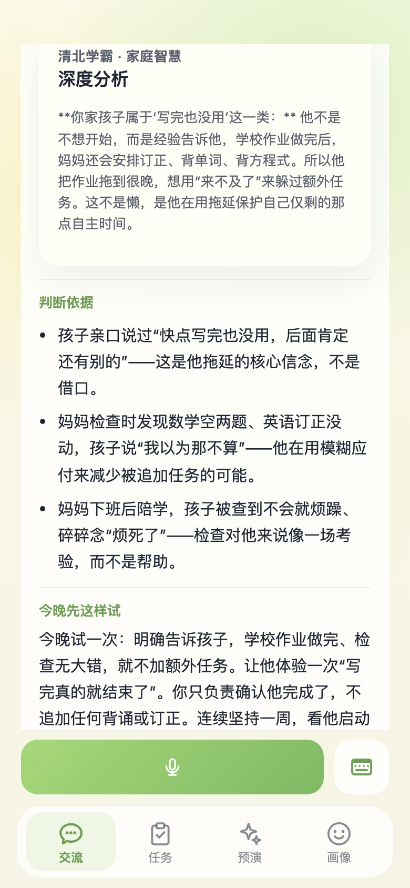
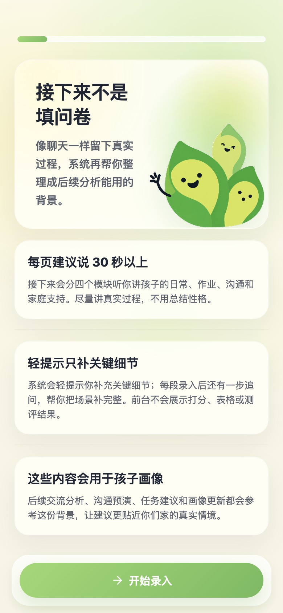
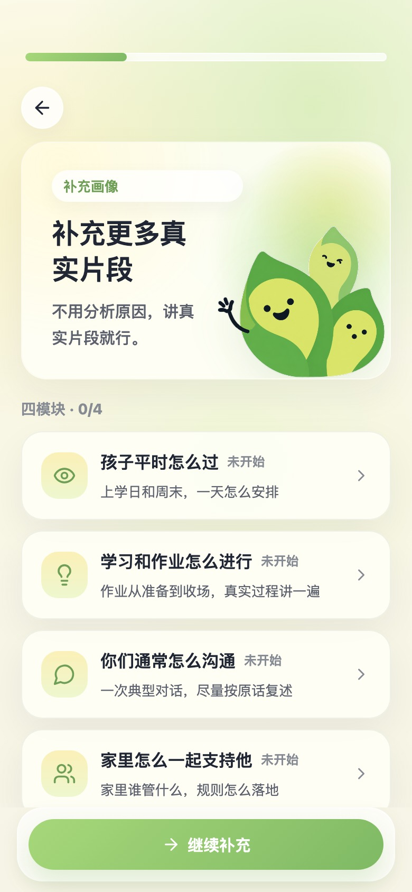
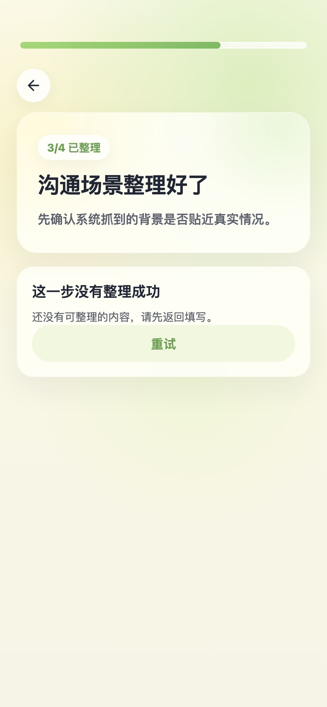
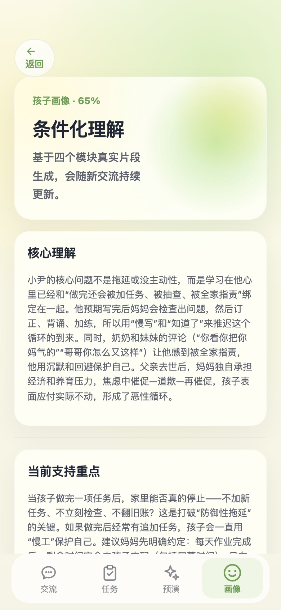

内容智库
一合学社
优质家庭教育智库内容平台
汇聚海量精选深度教育专栏、成长方法论与家长认知提升文库，供家长自主研习、持续进阶。
- 精选深度教育专栏
- 成长方法论文库
- 清北学子认知分享
Second Me · 孩子的第二自我
为每一个孩子建立专属的 Second Me——长期理解他、记住他、陪伴他成长的亲子心智空间。不是评判，而是看见；不是标签，而是懂得。

育见理念
我们相信，每个孩子都值得被真正理解。育见要做的，是帮家庭建立一份属于这个孩子的「第二自我」——承载他的习惯与触发点，记录他的变化与需要，在每一次对话里越来越靠近真实的他。
这不是替家长下结论，而是理解、承载、陪伴：把真实生活片段，变成对这个孩子持续生长的懂得。
从一次真实片段出发，看见行为背后正在发生的故事。
串联多次片段，形成对这个孩子持续生长的 Second Me。
把理解化为温和回应与可尝试的成长路径，长期同行。
教育生态
从线下公益实践、优质教育内容到 AI 亲子心智陪伴，构成育见面向未来的家庭教育生态。
内容智库
优质家庭教育智库内容平台
汇聚海量精选深度教育专栏、成长方法论与家长认知提升文库，供家长自主研习、持续进阶。
公益实践
全国高校公益支教与纪实传播
暑期 30+ 支教支队走进全国学校。我们正在筹备教育人文纪录片，以真实镜头记录支教现场、家庭成长与少年心事。
核心产品
AI 亲子心智陪伴系统
家庭成长智能陪伴生态。为每一个孩子建立 Second Me，在真实生活片段中实现心智理解、亲子调和与成长护航。
育见产品
向下滚动，感受四大能力如何随理解深入而展开。
家长说出真实的家庭片段。育见基于对这个孩子的长期理解，给出贴近你家场景的深度回应，而非泛泛的育儿建议。
从理解中生长出「今晚可试」的小步陪伴——低压力、可验证。每一次尝试，都会让 Second Me 更贴近真实的这个孩子。
在开口之前，先预演「准备对孩子说的话」。从孩子的接收视角给出反馈，帮助家长减少焦虑、靠近真实的沟通。
Second Me——只属于这个孩子的理解档案。习惯、触发点、互动模式、成长变化，在这里持续生长，越陪伴越懂得。
首次相识
面谈式对话，邀请家长从学习、日常、沟通、情绪四个生活维度讲述真实片段——让系统从第一天起认识这个孩子。
向家长说明：这是一份会持续生长的理解档案，而非一次性的分析报告。

用原话和场景描述这个孩子的真实状态——学习、日常、沟通、情绪。越具体，理解越准。

系统整理阶段性理解，家长确认后再写入——确保档案从第一天起建立在真实事实上。

此后每一次对话与尝试，都会让这个档案持续生长——越来越懂这个孩子。

核心技术
育见不是「聊完就忘」的对话产品，而是会记忆、会推理、会陪伴的长期理解系统——把家长日常的自然语言，转化为对这个孩子持续生长的 Second Me。
场景、原话、触发点越具体，理解越准。系统记住每一句细节，而非抽象概括。
家长感受到一位温和、记得住细节的陪伴者；深度推理由后台完成并持续更新档案。
每一次输入都在丰富档案；每一次回应都锚定已有理解，形成「越用越懂」的闭环。
原话 · 场景 · 情绪
理解 · 记忆 · 更新
对话 · 行动 · 彩排 · 档案
每一次亲子冲突、沉默或进步，都会被放入「这个家庭、这个孩子」的具体语境中理解。育见关注的不是抽象行为标签，而是：在这个家里发生了什么，孩子在保护什么，家长可以怎样靠近。
随着使用时间增长，Second Me 串联越来越多真实片段，形成对这个孩子习惯、触发点与应对方式的立体理解——这是通用对话产品无法提供的长期价值。
育见内部模拟一支专业教育顾问团队的分工协作——各有专长，共享对同一个孩子的理解：
多顾问协同架构
像一位善于倾听的师兄师姐，引导家长把碎片化的日常变成可被理解的场景叙述。
从多次片段中寻找规律，看见行为背后的家庭机制，构建 Second Me 的核心骨架。
当新的家庭事件发生时，回头检验既有理解是否仍然成立，让档案始终贴近真实。
站在家长一侧，基于档案给出温和、具体、可尝试的回应——始终锚定「这个孩子」。